Elliptic: Illicit Use of Dogecoin Increasing
~3 min read | Published on 2022-06-23, tagged Cryptocurrency, General-News using 747 words.
The blockchain analysis firm Elliptic identified Dogecoin as a cryptocurrency increasingly linked to criminal activity, including darknet market usage.
Elliptic, which offers blockchain intelligence solutions similar to Chainalysis, published a report identifying an increase in the use of Dogecoin for illicit activity on the internet. The report demonstrates that Dogecoin is rarely used for illegal purposes.
According to the company, the meme coin’s criminal uses include fraud, scams, ponzi schemes, terrorism financing, malware, transactions on darkweb markets, and the child sexual abuse material (CSAM) industry. Elliptic also identified so-called “far-right extremism” as one form of the “illicit use of Doge.”
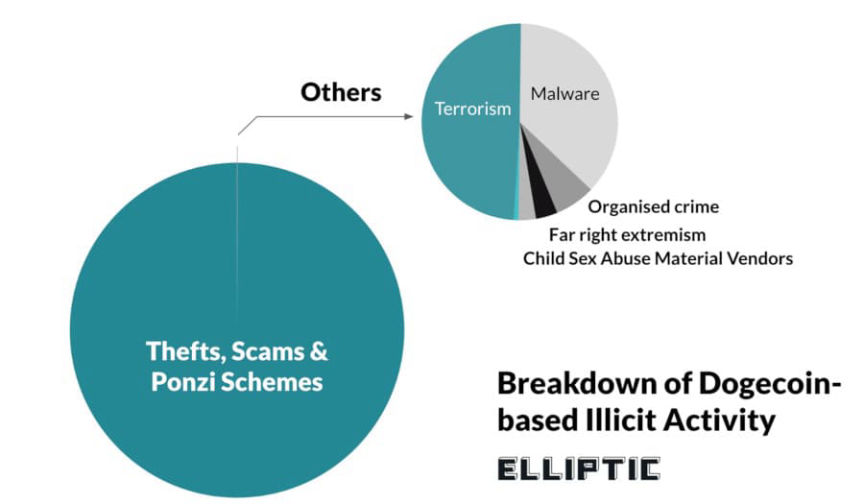
<h2 id="terrorism-financing">Terrorism Financing </h2>
The government in Israel seized Dogecoin worth $40,235 from wallets allegedly linked to the Islamic Resistance Movement in July 2021. This is the only example provided by Elliptic.
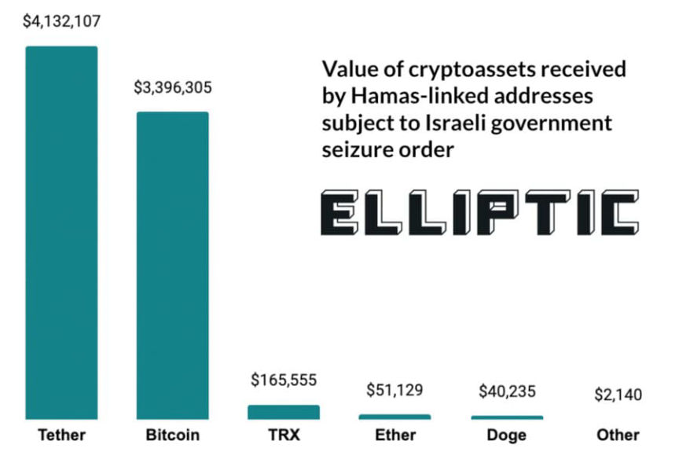
“While a small sum compared to Bitcoin and Tether, this example demonstrates the awareness, and increasing adoption, of a wide variety of cryptoassets by groups such as Hamas. It also reinforces the importance of blockchain analytics solutions in a compliance toolkit to enable financial institutions and law enforcement agencies to screen for risk beyond just the most popular cryptoassets.”
<h2 id="child-sexual-abuse-material">Child Sexual Abuse Material </h2>
Elliptic monitors child sexual abuse material (CSAM) vendors on the darknet and clearnet. The majority of cryptocurrency payments to CSAM vendors are in Bitcoin. “A small and growing number of these vendors accept other crypto assets – including Dogecoin,” the report claims. Elliptic explains that there has been $3,000 worth of Doge payments to CSAM vendors [em]to date[/em].
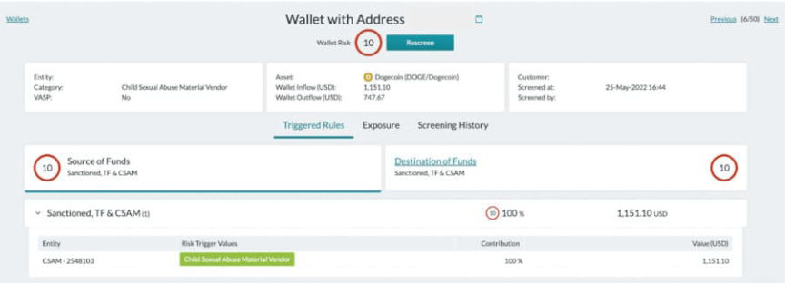
<h2 id="darkweb-markets">Darkweb Markets </h2>
The report includes two examples of darkweb marketplaces that either accept Doge payments or accepted them in the past.
Just-Kill, a “call & email flood service,” allows users to deposit funds using Dogecoin, among other cryptocurrencies.
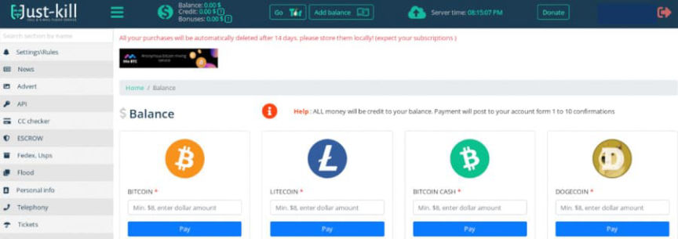
The report claims that Doge “[em]is[/em] accepted “on some popular darknet drug markets.”
Archetyp Market is one example of a darkweb drug market that accepts Doge payments. The market “previously used a coin swap service to allow users to deposit funds in a range of other cryptoassets – including Doge.” Archetyp currently only accepts Monero.
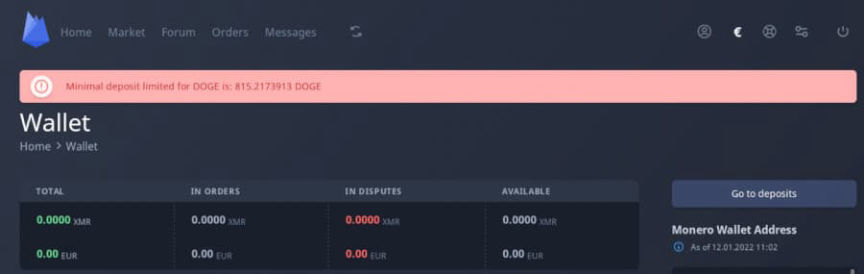
Another example of “the importance of blockchain analytics solutions” is the now-defunct Doge Road Market. Doge Road existed briefly in 2014 before exit scamming.<h2 id="malware">Malware </h2>
The report highlighted two malware campaigns that involved Dogecoin.
Cliptomaner, identified by Kaspersky in October 2020, hijacks a user’s clipboard to swap cryptocurrency addresses for addresses controlled by the attackers. Cliptomaner hijacks Doge addresses, among other cryptocurrencies, and has received almost $29,000 in Doge.
In July 2020, Intezer identified the “Doki” malware campaign, which used:
“a previously undocumented method to contact its operator by abusing the Dogecoin cryptocurrency blockchain in a unique way in order to dynamically generate its C2 domain address. The malware has managed to stay under the radar for over six months despite samples being publicly available in VirusTotal.”
<h2 id="far-right-extremism">“Far-Right Extremism” </h2>
Elliptic laments that when “payments companies such as PayPal, Visa and Mastercard” freeze accounts owned by nominally right-wing people, they “turn instead to cryptocurrencies such as Bitcoin.” By attempting to raise funds without using mainstream payment platforms, these targets of financial censorship have “increasingly [em]exploited the internet[/em],” Elliptic claims.
According to the report, the basic CivNat news outlet Infowars (“leftists are the real racists”) is an example of an extremist right-wing group embracing cryptocurrency. To date, Infowars has raised “over $1,700 in Doge alone.”
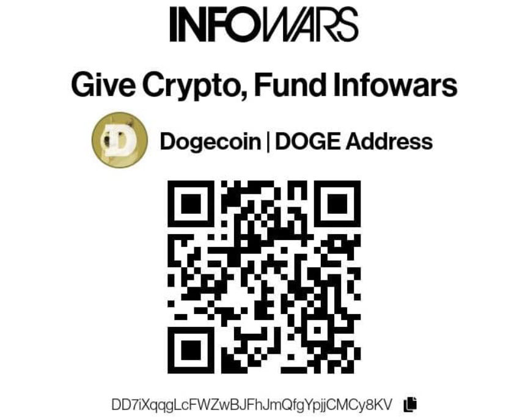
<h2 id="thefts-scams-and-ponzi-schemes">Thefts, Scams, and Ponzi Schemes </h2>
Elliptic highlighted the hack of the Dogecoin wallet Dogewallet which resulted in the loss of $14,000 in Doge.
“Additional notable examples include the Plus Token ponzi scheme, which resulted in the seizure of over $20 million in Doge by Chinese authorities, and an alleged theft of $119 million of Dogecoin connected to a Turkish ponzi scheme in 2021.”
The report seems accurate in that Dogecoin use has increased since its launch. I am skeptical that illicit Doge use is worth consideration. When I had a Twitter account, I saw countless scams involving Elon Musk imposters and various cryptocurrencies, including Doge. The total earnings of cryptocurrency scammers on Twitter dwarf the examples of illicit cryptocurrency use provided by Elliptic. For instance, during one weekend in February 2021, scammers earned more than $145,000 in cryptocurrency through fake giveaways on Twitter, including $26,004.94 worth of Doge.
Dogecoin Gaining Traction for Illicit use | archive.is, archive.org, hub.elliptic.co
Elliptic, which offers blockchain intelligence solutions similar to Chainalysis, published a report identifying an increase in the use of Dogecoin for illicit activity on the internet. The report demonstrates that Dogecoin is rarely used for illegal purposes.
According to the company, the meme coin’s criminal uses include fraud, scams, ponzi schemes, terrorism financing, malware, transactions on darkweb markets, and the child sexual abuse material (CSAM) industry. Elliptic also identified so-called “far-right extremism” as one form of the “illicit use of Doge.”
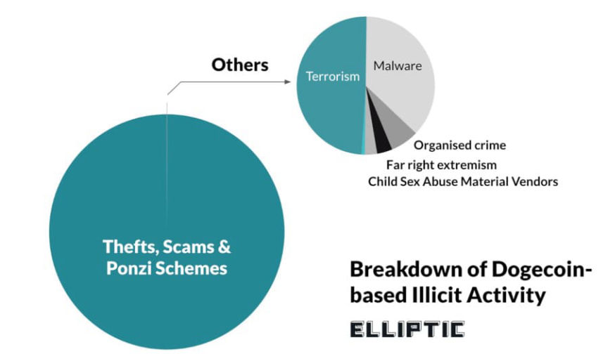
Theft, scams, and ponzi schemes are the most common illicit activities involving Doge.
<h2 id="terrorism-financing">Terrorism Financing </h2>
The government in Israel seized Dogecoin worth $40,235 from wallets allegedly linked to the Islamic Resistance Movement in July 2021. This is the only example provided by Elliptic.
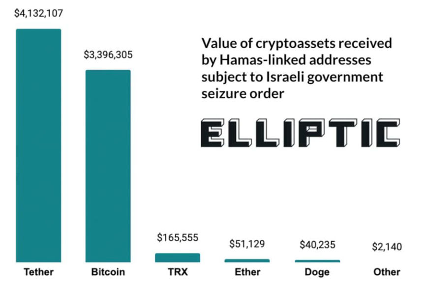
Israel seized money from a Palestinian political party.
“While a small sum compared to Bitcoin and Tether, this example demonstrates the awareness, and increasing adoption, of a wide variety of cryptoassets by groups such as Hamas. It also reinforces the importance of blockchain analytics solutions in a compliance toolkit to enable financial institutions and law enforcement agencies to screen for risk beyond just the most popular cryptoassets.”
<h2 id="child-sexual-abuse-material">Child Sexual Abuse Material </h2>
Elliptic monitors child sexual abuse material (CSAM) vendors on the darknet and clearnet. The majority of cryptocurrency payments to CSAM vendors are in Bitcoin. “A small and growing number of these vendors accept other crypto assets – including Dogecoin,” the report claims. Elliptic explains that there has been $3,000 worth of Doge payments to CSAM vendors [em]to date[/em].
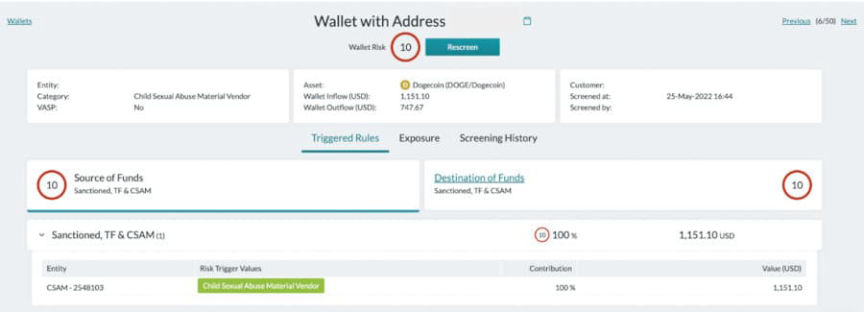
A screenshot of a CSAM-flagged address in Elliptic Lens.
<h2 id="darkweb-markets">Darkweb Markets </h2>
The report includes two examples of darkweb marketplaces that either accept Doge payments or accepted them in the past.
Just-Kill, a “call & email flood service,” allows users to deposit funds using Dogecoin, among other cryptocurrencies.
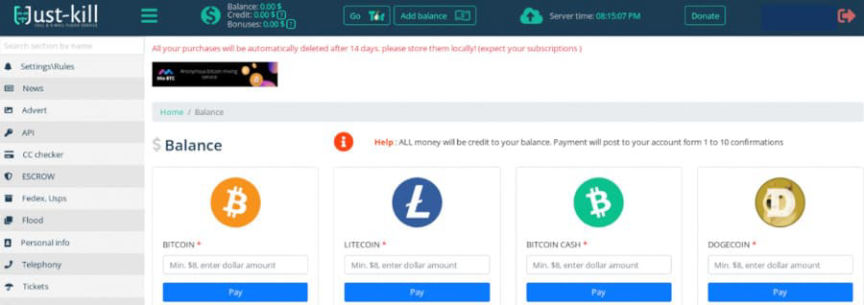
Just Kill
The report claims that Doge “[em]is[/em] accepted “on some popular darknet drug markets.”
Archetyp Market is one example of a darkweb drug market that accepts Doge payments. The market “previously used a coin swap service to allow users to deposit funds in a range of other cryptoassets – including Doge.” Archetyp currently only accepts Monero.
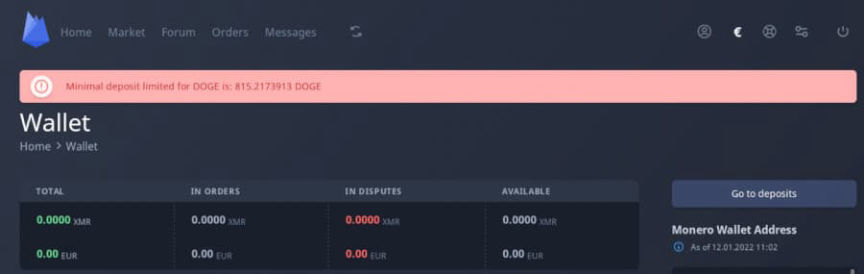
Archetyp Market no longer allows users to conduct transactions with Dogecoin.
Another example of “the importance of blockchain analytics solutions” is the now-defunct Doge Road Market. Doge Road existed briefly in 2014 before exit scamming.<h2 id="malware">Malware </h2>
The report highlighted two malware campaigns that involved Dogecoin.
Cliptomaner, identified by Kaspersky in October 2020, hijacks a user’s clipboard to swap cryptocurrency addresses for addresses controlled by the attackers. Cliptomaner hijacks Doge addresses, among other cryptocurrencies, and has received almost $29,000 in Doge.
In July 2020, Intezer identified the “Doki” malware campaign, which used:
“a previously undocumented method to contact its operator by abusing the Dogecoin cryptocurrency blockchain in a unique way in order to dynamically generate its C2 domain address. The malware has managed to stay under the radar for over six months despite samples being publicly available in VirusTotal.”
<h2 id="far-right-extremism">“Far-Right Extremism” </h2>
Elliptic laments that when “payments companies such as PayPal, Visa and Mastercard” freeze accounts owned by nominally right-wing people, they “turn instead to cryptocurrencies such as Bitcoin.” By attempting to raise funds without using mainstream payment platforms, these targets of financial censorship have “increasingly [em]exploited the internet[/em],” Elliptic claims.
According to the report, the basic CivNat news outlet Infowars (“leftists are the real racists”) is an example of an extremist right-wing group embracing cryptocurrency. To date, Infowars has raised “over $1,700 in Doge alone.”
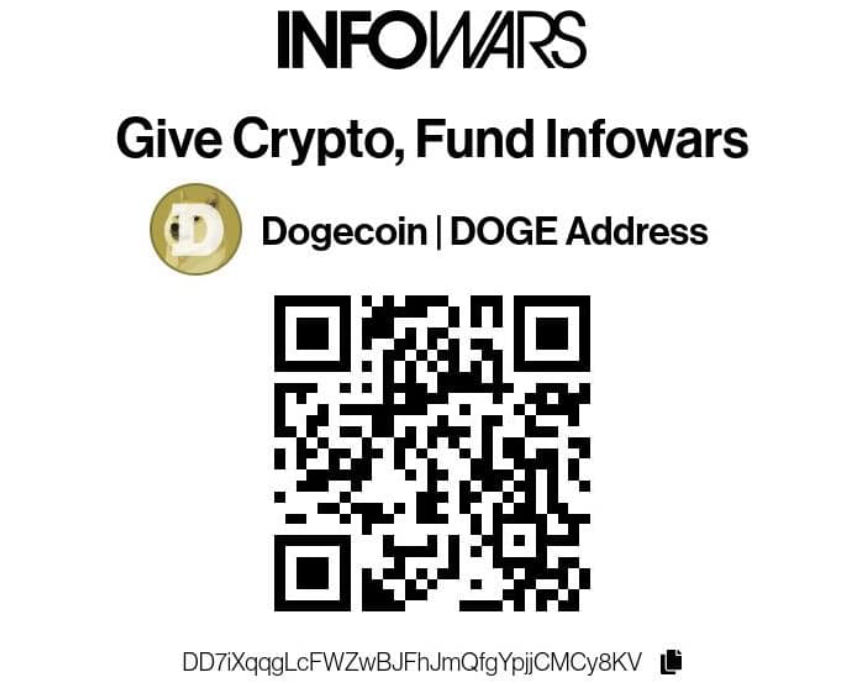
Infowars accepts donations in the form of several cryptocurrencies.
<h2 id="thefts-scams-and-ponzi-schemes">Thefts, Scams, and Ponzi Schemes </h2>
Elliptic highlighted the hack of the Dogecoin wallet Dogewallet which resulted in the loss of $14,000 in Doge.
“Additional notable examples include the Plus Token ponzi scheme, which resulted in the seizure of over $20 million in Doge by Chinese authorities, and an alleged theft of $119 million of Dogecoin connected to a Turkish ponzi scheme in 2021.”
The report seems accurate in that Dogecoin use has increased since its launch. I am skeptical that illicit Doge use is worth consideration. When I had a Twitter account, I saw countless scams involving Elon Musk imposters and various cryptocurrencies, including Doge. The total earnings of cryptocurrency scammers on Twitter dwarf the examples of illicit cryptocurrency use provided by Elliptic. For instance, during one weekend in February 2021, scammers earned more than $145,000 in cryptocurrency through fake giveaways on Twitter, including $26,004.94 worth of Doge.
Dogecoin Gaining Traction for Illicit use | archive.is, archive.org, hub.elliptic.co